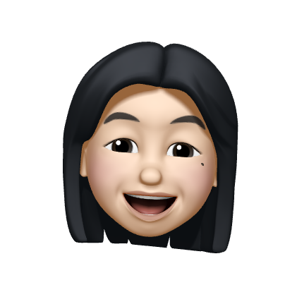

日夜(일야)
김유정 김예지

있을 땐 모르다가 사라지고 나서야 그리워지는 것들이 있다. 시간이 그렇고 이번 봄이 그랬다. 봄인지도 모르고 지나가버린 이번 봄, 각자가 어떻게 보냈는지에 대한 내용을 아주 일상적이면서 로맨틱하게 추억해본다.
Back to top
김유정 김예지
있을 땐 모르다가 사라지고 나서야 그리워지는 것들이 있다. 시간이 그렇고 이번 봄이 그랬다. 봄인지도 모르고 지나가버린 이번 봄, 각자가 어떻게 보냈는지에 대한 내용을 아주 일상적이면서 로맨틱하게 추억해본다.
Back to top